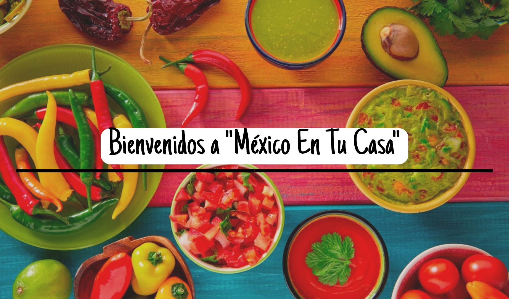

MEXICO EN
TU CASA
"Cocina y bebe por que
la vida es breve "
Inicio
Platillos
Guarniciones
Bebidas Y Postres
Sitios Web

¿QUÉ ES LA COCINA MEXICANA?
La gastronomia mexicana es el conjunto de platillos y tecnicas
culiniarias de Mexico que forman parte de las tradiciones y vida comun de sus habitantes enriquesida
por las aportaciones de las distintas regiones del pais.
¡Visita nuestra Tienda!